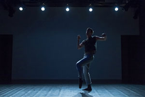

past performances |
|||
|
the CURRENT SESSIONS: Photo credit: Corey Melton; Company: The YC The CURRENT SESSIONS is a NYC-based dance organization and presenting series that represents the works of early and midcareer choreographers and movement-based artists. We seek to provide a place for contemporary dance to thrive, serving as an incubator for the furtherance of our choreographers’ artistic visions. Volume IV, Issue II. will feature 12 choreographers and 3 guest artists in 4 diverse programs, with a primary focus on works that have a dance theater/performance art influence, are created in collaboration with a sound designer, or carries a broad message of activism, among others. |
 | ||
|
ARTIST LINEUP: PROGRAM A: Friday, August 22nd at 7:30pm |
PROGRAM B: Saturday, August 23rd at 730pm Allison Jones // Allison Jones Dance Jay Carlon Kathryn Rhodes // RoadWork Robert Daniel Holmes Maynard Sophie Maguire // lonely goat Wynn Holmes // Street Parade (film) with Guest Artists Arias // Bryan Arias Danielle Russo Dance Company |
||
| PROGRAM C: Sunday, August 24th at 3pm with Talkback Colby Damon EmmaGrace Skove-Epes Robert Daniel Holmes Maynard Sophie Maguire // lonely goat Sophie Sotsky // TYKE DANCE Stephanie Acosta with Jessie Young with Guest Artist Danielle Russo Dance Company |
PROGRAM D: Sunday, August 24th at 7pm Allison Jones // Allison Jones Dance Enza DePalma // E|N|Z|A Jay Carlon Kathryn Rhodes // RoadWork Nicole von Arx Wynn Holmes // Street Parade (film) with Guest Artists Arias // Bryan Arias crux // Troy Ogilvie |
||
|
The CURRENT SESSIONS will also be facilitating our workshop series, LAB // SESSIONS, from Monday to Thursday, August 18 - 21, at Teatro Circulo from 12pm - 2pm. These workshops are FREE with RSVP, and allows professional dancers and non-dancers alike to learn about the creative process and individual style of select SESSIONS choreographers. More information and full schedule at www.thecurrentsessions.com. |
|||
upcoming performances |
|||
 |
|||
| EVQ Film Festival 2018 August 20-25 |
|||
performance archives |
|||
| 2018 | 2017 | 2016 | 2015 |
| 2014 | 2013 | 2012 | 2011 |
| 2010 | 2009 | 2008 | 2007 |